NCERT Solutions Class 9 Science Chapter 13 Why Do we Fall Ill – Here are all the NCERT solutions for Class 9 Science Chapter 13. This solution contains questions, answers, images, step by step explanations of the complete Chapter 13 titled Why Do we Fall Ill of Science taught in class 9. If you are a student of class 9 who is using NCERT Textbook to study Science, then you must come across Chapter 13 Why Do we Fall Ill. After you have studied lesson, you must be looking for answers of its questions. Here you can get complete NCERT Solutions for Class 9 Science Chapter 13 Why Do we Fall Ill in one place. For a better understanding of this chapter, you should also see Chapter 13 Why Do we Fall Ill Class 9 notes , Science.
NCERT Solutions for Class 9 Science Chapter 13 Why Do We Fall Ill
Topics and Sub Topics in Class 9 Science Chapter 13 Why Do We Fall Ill:
- Why Do We Fall Ill
- Health and its Failure
- Disease and Its Causes
- Infectious Diseases
These solutions are part of NCERT Solutions for Class 9 Science. Here we have given NCERT Solutions for Class 9 Science Chapter 13 Why Do We Fall Ill.
In-Text Questions Solved
NCERT Textbook for Class 9 Science – Page 178:
Question 1. State any two conditions for good health
Answer: Two conditions essential for good health are:
- State of physical, mental and social well-being.
- Better surroundings or -environment.
More Resources for CBSE Class 9
- NCERT Solutions
- NCERT Solutions Class 9 Maths
- NCERT Solutions Class 9 Social Science
- NCERT Solutions Class 9 English
- NCERT Solutions Class 9 Hindi
- NCERT Solutions Class 9 Sanskrit
- NCERT Solutions Class 9 IT
- RD Sharma Class 9 Solutions
Question 2. State any two conditions essential for being free of disease.
Answer. The two conditions essential for being free of disease are:
- Personal and -domestic .hygiene.
- Clean environment and surroundings
Question 3. Are the answers to the above questions necessarily the same or different ? Why ?
Answer: The answer to the above questions are different because a person may be free of disease but his mental, social or economical health may not be good.
Formulae Handbook for Class 9 Maths and ScienceEducational Loans in India
Class 9 Science NCERT Textbook – Page 180
Question 1. List any three reasons why you would think that you are sick and ought to see a doctor. If only one of these symptoms were present, would you still go to the doctor? Why or why not?
Answer: The 3 reasons why one would think that he is sick are—(1) headache, (2) cold and cough, (3) loose-motions.
This indicates that there may be a disease but does not indicate what the disease is. So one would still visit the doctor for the treatment and to know the cause of above symptom.
Even in case of single symptom one needs to go to the doctor to get proper treatment.
Question 2. In which of the following case do you think the long-term effects on your health are likely to be most unpleasant?
- If you get jaundice
- If you get lice
- If you get acne.
Why.
Answer: In the above cases, lice and acne are acute problems of our health which can be cured in short duration. But jaundice is the disease that can have most unpleasant effect on our health as it affects the most important organ of our body i.e., liver. This disease is a chronic one.
NCERT Textbook for Class 9 Science – Page 187
Question 1. Why are we normally advised to take bland and nourishing food when we are sick?
Answer: We are advised to take bland and nourishing food when we are sick because our body needs energy to release cells to overcome the infection, the wear and tear of body organ. The nourishing food provides nutrients to our body that will further provide energy and make new cells. No spices in the food makes its digestion process faster, does not release acids in the body that can interfere in the treatment and cure.
Question 2. What are the different means by which infectious diseases are spread?
Answer: The different means by which infectious diseases spread are:
(a) Through air: They are also called air-borne diseases. The air carries bacteria, virus and the diseases that can be caused are: common cold, influenza, tuberculosis etc.
(b) Through food and water: When one eats/drinks contaminated food/water, that contains bacteria, virus, worm etc. it can cause diseases like cholera typhoid, hepatitis.
(c) Through contact: Many diseases spread by contact of infected person with the healthy person. Example, fungal infections, skin diseases, scabies etc.
(d) By sexual contact: Many diseases can be transmitted, example, syphilis, AIDS.
(e) By body fluids: Fluids like blood, semen, mother’s milk, when infected,
can also cause diseases. Example, AIDS.
(f) Vectors: The organism that spreads a disease by carrying pathogens from one place to another is called vector. Example, mosquitoes are vectors that carry pathogens like protozoa.
Question 3. What precautions can you take in your school to reduce the incidence of infectious diseases?
Answer: The precautions that one can take in school to reduce the incidence of infectious diseases are
(a) By using handkerchief while coughing sneezing.
(b) Washing hands before eating tiffins.
(c) Staying at home if anyone suffers from infectious diseases.
(d) Getting vaccinated before the infection affects.
(e) Keeping the school surroundings clean, checking for stagnant water.
Question 4. What is immunisation?
Answer: When the body attains immunity against any disease, due to vaccination. This process is called immunisation.
Question 5. What are the immunisation programmes available at the nearest health centre in your locality? Which of these diseases are the major health problems in your area?
Answer: The immunization programmes available at the nearest health care centres are:
- Child immunization programme starts from 0 to 12 years.
- Polio eradication programme
- H1N1 screening programme
| Age | Immunisation |
|
Infant 6 weeks—9 weeks 9-12 months |
Polio, B.C.G D.P.T, tetanus booster doses, chickenpox, hepatitis A, B etc. |
In major areas tuberculosis cases are reported in a large number which is a major concern.
Questions From NCERT Textbook for Class 9 Science
Question 1. How many times did you fall ill in the last one year? What were the illnesses?
(a) Think of one change you could make in your habits in order to avoid any of/ most of the above illnesses.
(b) Think of one change you would wish for in your surroundings in order to avoid any of/most of the above illness.
Answer: The illness was 2-3 times, common-cold, occurred in a year.
(a) One change I would make in my habits in order to avoid the above illness is that I would take proper diet rich in vitamin C and would avoid too cold food.
(b) The surroundings should be neat, and clean,
Question 2. A doctor/nurse/health worker is exposed to more sick people than others in the community. Find out how she/he avoids getting sick herself/himself?
Answer: A doctor/nurse/health worker when exposed to sick people they keep their nose and mouth covered, take care of hygiene, wash hands with soap before drinking water or eating food. They use mask, gloves, etc to avoid the direct contact with the person suffering from infectious diseases.
Question 3. Conduct a survey in your neighbourhood to find out what the three most common diseases are. Suggest three steps that could be taken by your local authorities to . bring down the incidence of these diseases.
Answer:
| Common-diseases In neighbourhood | Steps to bring down the diseases spread |
| 1. Malaria
2. Typhoid 3. Cough and cold |
1. Clean surrounding 2. Clean drinking water 3. Childhood immunisation |
Question 4. A baby is not able to tell bis/her.caretakers that she/he is sick. What would help us to find out
(a) that the baby is sick?
(a) what is the sickness?
Answer:
(a) The symptoms like body temperature, fever, cough, cold, loose-motions, non-stop crying improper or no food intake etc. would help up to find that the baby is sick.
(b) The symptoms could help us to find out the sickness of the body.
Question 5. Under which of the following conditions is a person most likely to fall sick?
(a) When she is recovering from malaria.
(b) When she has recovered from malaria and is taking care of someone suffering from chicken-pox.
(c) When she is on a four-day fast after recovering from malaria and is taking care of someone suffering from chicken-pox.
Why?
Answer: (c) When she is on a four-day fast after recovering from malaria and is taking care of someone suffering from chicken-pox.
As the person is not taking proper diet which is required for her proper health and healing of body.
Her chances of getting chicken-pox also high as her body’s immunity has lowered.
Question 6. Under which of the following conditions are you most likely to fall sick?
(a) When you are taking examinations.
(b) When you have travelled by bus and train for two days.
(c) When your friend is suffering from measles.
Why?
Answer: (c) When your friend is suffering from measles, as it is an infectious disease.
NCERT Solutions for Class 9 Science Chapter 13 Why Do we Fall Ill (Hindi Medium)
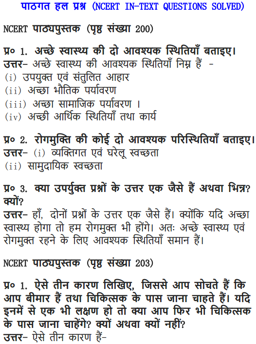
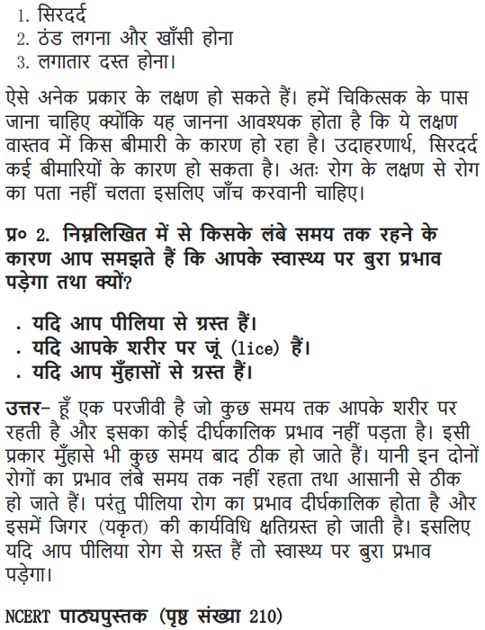
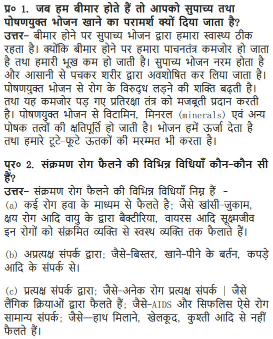
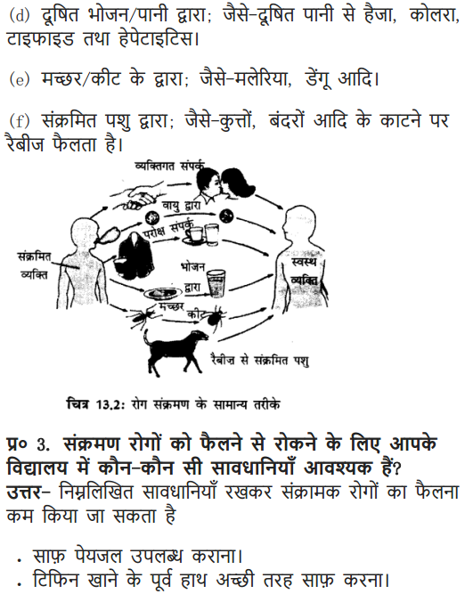
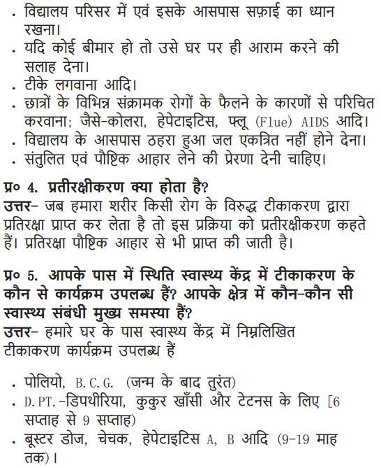
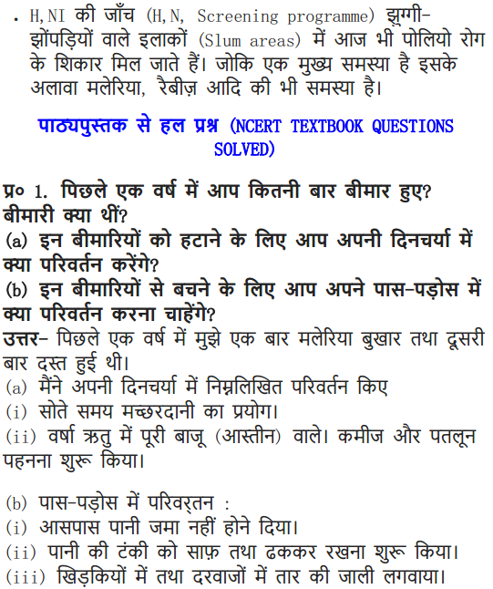
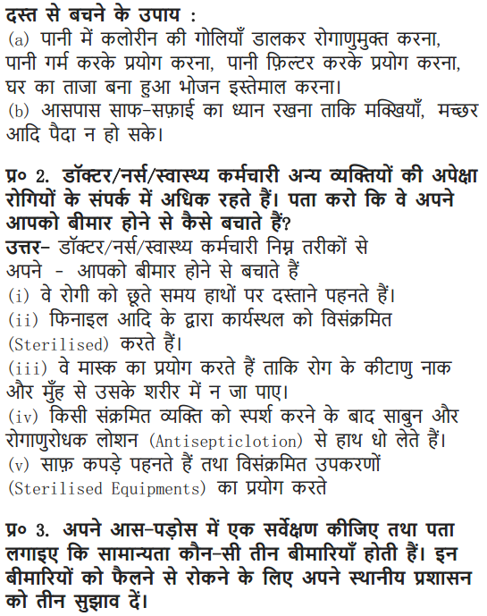
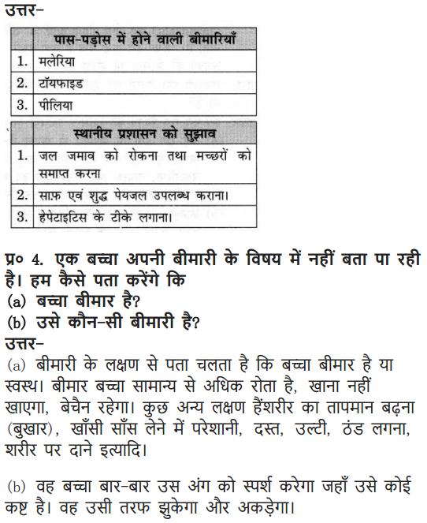
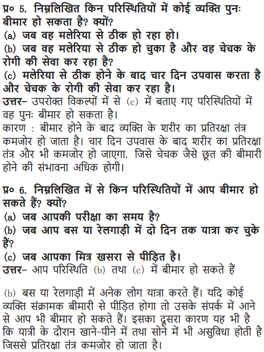
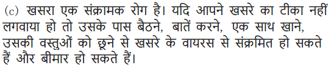
More Questions Solved
NCERT Solutions for Class 9 Science Chapter 13 Multiple Choice Questions
Choose the correct option:
1. The disease that affects our lungs is
(a) AIDS (b) rabies
(c) polio (d) tuberculosis
2. The BCG vaccine is given for the immunity against
(a) hepatitis (b) jaundice
(c) tuberculosis (d) malaria
3. Malaria is caused due to
(a) protozoa (b) Anopheles mosquito
(c) both (a) and (b) (d) none of the above
4. Trypanosoma, Leishmania and Plasmodium are the examples of
(a) virus (b) bacteria
(c) protozoa (d) worm
5. Diarrhoea, cholera, typhoid, are the diseases that have one thing in common, that is:
(a) All of them are caused by bacteria.
(b) All of them are transmitted by contaminated food and water.
(c) All of them are cured by antibiotics.
(d) All of the above.
6. The bacteria among the following is
(a) Plasmodium (b) Trypanosoma
(c) Rabies virus (d) Salmonella typhi
7. HIV virus attacks one of the following cells in our body:
(a) Red blood cell (b)White blood cell
(c) Liver cell (d) Long cell
8. The pathogens of disease are
(a) bacteria (b) virus
(c) protozoa(d) all of the above
9. Penicillin is a drug that can
(a) interfere in thq biological pathway of bacteria
(b) an antibiotic that can kill bacteria
(c) both (a) and (b)
(d) none of the above
10. The disease caused due to worm is
(a) tetanus (b) rabies
(c) sleeping sickness (d) filariasis
Answer. 1—(d), 2—(c), 3—(c), 4—(c), 5—(d), 6—(d),10—(d).
NCERT Solutions for Class 9 Science Chapter 13 Very Short Answer Type Questions
Question 1. Define health.
Answer. Health means a state of physical, mental and social well-being.
Question2. Define disease.
Answer: Disease means being uncomfortable.
Question 3. What do you mean by symptoms of disease?
Answer: Symptoms of disease are the signs of a disease which indicates the presence of a particular disease.
Question 4. What are acute diseases?
Answer: Those diseases which last for very short period of time are called acute diseases. Example, headache and cold.
Question 5. What are chronic diseases?
Answer: The diseases which last for very long period of time are called chronic disease Example, tuberculosis and jaundice.
Question 6. What are pathogens?
Answer: The disease causing microbes are called pathogens. Example, bacteria, virus, fungi, worms.
Question 7. What are vectors?
Answer: The organisms that spread or carry pathogens from one place to another, from infected person to healthy person is called vector.
Example, mosquito, housefly etc.
Question 8. What are infectious diseases?
Answer: Diseases which can spread from one person to another and microbes are the immediate cause for these diseases are called infectious diseases. Example, typhoid
Question 9. What are non-infectious diseases?
Answer: Diseases which do not spread from one person to another is called non-infectious diseases. Example, cancer.
Question 10. Name any one disease caused due to genetic abnormality.
Answer: Haemophilia.
Question 11. Name two diseases caused by protozoa.
Answer: Malaria and amoebiasis.
Question 12. Name two diseases caused due to bacteria.
Answer. Tuberculosis, typhoid.
Question 13. Name two disease caused due to virus.
Answer: Polio, chickenpox.
Question 14. Name two disease caused by fungi.
Answer: Scabies and skin infection.
Question 15. What are antibiotics?
Answer: Antibiotics are drugs that block the biochemical pathways important for bacteria. These are used to cure diseases caused due to bacteria.
Question 16. Give the full form of AIDS.
Answer: AIDS-Acquired Immuno Deficiency Syndrome (Syndrome means collection of symptoms).
Question 17. Name the pathogen that causes sleeping sickness.
Answer: The protozoan → Trypanosoma.
Question 18. Name the organism that causes kala-azar.
Answer: Leishmania.
Question 19. Name two air-borne diseases.
Answer: Common cold, cough,* tuberculosis.
Question 20. Name two diseases that are organ specific.
Answer:
Jaundice – liver
Tuberculosis – lungs
Question 21. Which virus causes AIDS?
Answer: HIV virus causes AIDS
HIV—Human Immuno Deficiency Virus.
NCERT Solutions for Class 9 Science Chapter 13 Short Answer Type Questions
Question 1. Give the difference between acute disease and chronic disease.
Answer:
| Acute disease | Chronic disease |
| 1. It may last for few days.
2. It does not have major effect on body. |
1. It lasts for longer period. 2. It affects the body drastically. |
Question 2. State two main causes of disease.
Answer: Two main causes of disease are immediate cause and contributory cause. Immediate cause: This is due to the organisms that enter our body and cause disease. Example, virus, protozoa, bacteria.
Contributory cause: These are the secondary factors which lead these organisms to enter our body. Example, dirty water, unclean surrounding, contaminated food etc.
Question 3. Define vaccine and name two vaccines.
Answer: Vaccine is a chemical /drug given in advance to a body to give immunity against certain diseases.
Vaccines given to children are:
(a) BCG—for tuberculosis prevention
(b) Polio drops—for polio prevention
Question 4. What is antibiotic penicillin? Give its function.
Answer: Penicillin antibiotic blocks the bacterial processes that build the cell wall. Due to this drug, the bacteria is unable to make a protective cell wall and dies easily. It is used to cure the diseases and infections caused by bacteria.
Question 5. Bacteria is a cell, antibiotics can kill these bacteria (cell), Human body is also made of cells how does it affect our body?
Answer: Antibiotics block the biochemical pathway of bacteria by which it makes a protective cell wall around it. Antibiotic does not allow the bacteria to make this cell wall because of which they die.
Human body cell don’t make any cell wall so antibiotics cannot have any such effect on our body.
Question 6. How does cholera becomes an epidemic in a locality?
Answer: Cholera is an infectious disease that spreads due to unsafe water. It can spread in a locality; if a person suffering from cholera lives in the locality and
the excreta of this person, get mixed with the drinking water used by people living nearby. The cholera-causing microbe enters the new hosts through the water they drink and cause disease in them.
Question 7. Name the organs affected due to the following diseases:
Malaria, jaundice, Japanese encephalitis, typhoid.
Answer:
- Malaria: Infects liver and red blood cells
- Jaundice: Infects the liver.
- Japanese encephalitis: Infects the brain
- Typhoid: Infects blood.
Question 8. Why are sick patients advised to take bed rest?
Answer: Doctors advise to take bed rest for sick patients so that they can conserve their energy which can be used for healing of their body organs which were affected due to certain disease.
Question 9. How do we kiU microbes that enter our body and cause diseases?
Answer: Microbes can be killed by using medicines These microbes are of different categories—virus, bacteria, fungi or protoza. Each of these groups of organisms have some essential biochemical life processes which is peculiar to a particular group and is not shared by others. These pathways are not used by us. By using drugs that blocks the microbial synthesis pathway without affecting us can kill the microbes.
Question 10. What are disease specific means of prevention?
Answer: The disease specific means of prevention are the use of vaccines. The vaccines, are used against tetanus, diphtheria, whooping cough, measles, polio and many others.
Question 11. Why can’t we make antiviral medicines/drugs?
Answer: The viruses lie on the border line of living and non-living organisms. The viruses can live, grow and multiply only inside the host body. They cannot be grown or cultured and their .biological pathways cannot be affected. Hence, the antiviral medicines/drugs is difficult to make.
Question 12. Write a short note on malaria as a disease, its symptoms and control.
Answer: Malaria is caused by protozoa that lives in blood. This parasite enters our body through a female Anopheles mosquito bite which is the vector, visits water to lay eggs, the protozoa enters our blood stream when female mosquito bites us. This protozoa affects our liver and red blood cells.
Symptoms: Very high fever with periodic shivering, headache and muscular pain. –
Control: Use of quinine drug, keeping the surroundings clean with no stagnant water, use of mosquito repellent creams, nets, can control the spread of this disease.
Question 13. What is AIDS? How does a person get affected with HIV?
Answer: AIDS is Acquired Immuno Deficiency Syndrome, it is caused due to HIV— human immuno deficiency virus. This virus reduces the immunity of human body. Therefore if any microbe enters the body of a person it causes disease killing the person.
The virus is transmitted from infected person to other person by any of the following way:
(a) Blood transfusion.
(b) From mother (infected) to baby in the womb.
(c) From mother’s milk to lactating baby.
(d) By sexual contact.
(e) Sharing of needle with an infected person.
Question 14. Becoming exposed to or infected with an infectious microbe does not necessarily mean developing noticeable disease. Explain.
Answer: This is because the immune system of our body is normally fighting off microbes. Our body have cells that are specialised in killing infecting microbes. Whenever any microbes or foreign body enters our system, these cells become active and kill the microbes that could cause any damage to the body. These immune cells manage to kill off the infection and a person does not get disease.
Question 15. What are three limitations for the approach to deal with infectious diseases?
Answer: The three limitations are:
(1) If someone has a disease, their body functions are damaged and may never recover completely.
(2) As the treatment will take time, the person suffering from a disease is likely to be bedridden for some time.
(3) The infectious person can serve as the source from where the infection may spread to other people.
Question 16. Give the common methods of transmission of diseases.
Answer:
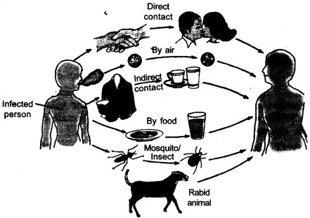
The common methods of transmission of diseases are:
(1) By air – cough, cold, tuberculosis
(2) By food and water – typhoid, jaundice
(3) By mosquito bite – malaria
(4) By rabid animal – rabies
(5) By direct contact – skin infection, small pox, AIDS
(6) By indirect contact – typhoid, chickenpox
Question 17. What are the basic conditions for good healths?
Answer: The basic conditions for good health are:
(1) Proper balanced and nutritious diet
(2) Personal hygiene
(3) Clean surroundings and clean environment
(4) Regular rest
(5) Proper rest
(6) Good economic status.
NCERT Solutions for Class 9 Science Chapter 13 Long Answer Type Questions
Question 1. If someone in the family gets infectious disease, what precautions will you advice to the other family members?
Answer: For an infectious diseased person in the family following precautions should be taken:
(1) The surroundings and the house should be clean.
(2) The infected person should be kept isolated in a separate room.
(3) The clothes and utensils of patient should be sanitized regularly.
(4) Separate towels and handkerchief should be used by the patient.
(5) Children should not be allowed to visit the infected person.
(6) Clean and boiled drinking water should be given to the patient.
(7) A balanced and nutritious diet which will provide lot of energy should be given.
(8) There should be silence and the patient should be given lot of bedrest to overcome the infection.
Question 2. What is a disease? Classify disease based on duration and infection cause.
Answer: Disease can be defined as the state of human health which is not at ease is not comfortable. During disease, the functioning or appearance of one or more systems of the body changes.
Classification:
(a) Based on duration:
Acute diseases: Diseases that last for only short period of time. Example, headache, common cold etc.
Chronic diseases: Diseases that last for long time is called chronic disease Example, tuberculosis.
(b) Based on cause: Disease can be grouped as infectious/communicable disease and non-infectious or non-communicable disease.
Infectious diseases: These diseases are caused due to microbes and can spread from one person to another.
Non-infectious diseases: These type of diseases do not spread in the community, but remains internal. Example, cancer, genetic abnormalities.
Question 3. What are the different ways used for the treatment and prevention of diseases?
Answer: Principles of treatment for diseases are:
(1) To reduce the effect of the diseases.
(2) To kill the cause of the disease i.e., to kill the microbes like bacteria, fungi, protozoa.
Principles of prevention are:
(a) General ways: It relate to preventing exposure to the microbes. This can be done in following ways:
- For avoiding air-borne infections—Avoid visiting public place, cover your nose and mouth while sneezing or coughing
- For water-borne infection—Drink safe, clean and boiled water.
- For vector-borne diseases—Keep the surroundings clean, keep food and water covered and clean. Do not allow any water to stand as it becomes a breeding ground for mosquitoes.
- Self immunity—It is self-defence mechanism in our system that can fight off and kill microbes that enter our body.
(b) Specific ways—By giving vaccines, childhood immunisation that is given to children for preventing infections and diseases.
Question 4. State the mode of transmission for the following diseases:
Malaria, AIDS, Jaundice, Typhoid, Cholera, Rabies, Tuberculosis, Diarrhoea, Hepatitis, Influenza.
Answer:
| SL. No. | Diseases | Mode of transmission |
| 1. | Malaria | Mosquito bite (female Anopheles mosquito carries protozoa) |
| 2. | AIDS | Infected blood, semen, mother’s milk, from mother to foetus. |
| 3. | Jaundice | Contaminated water. |
| 4. | Typhoid | Contaminated food and water. |
| 5. | Cholera | Contaminated food and water. |
| 6. | Rabies | Bite of rabid animal. |
| 7. | Tuberculosis | Cough and sneeze droplets. |
| 8. | Diarrhoea | Contaminated food and water. |
| 9. | Hepatitis | Contaminated food and water. |
| 10. | Influenza | Cough and sneeze droplets. |
Question 5. Name all the micro-organisms that causes infectious disease and name few diseases caused by each micro-organism.
Answer:
| Infections Micro-organism | Disease |
| Bacteria | Tuberculosis, typhoid, diarrhoea, cholera |
| Virus | Polio, AIDS, chickenpox |
| Protozoa | Malaria, amoebiasis, kala-azar, sleeping sickness |
| Fungi | Food poisoning, skin diseases |
NCERT Solutions for Class 9 Science Chapter 13 Value-Based Questions
Question 1. AIDS is spreading globally at very fast rate, a group of class-IX students made a module on its prevention and posted it on social networking site.
(a) What is the cause of AIDS?
(b) Give any two preventions for it.
(c) What value of these students is reflected in this act?
Answer:
(a) HIV virus.
(b) Two preventive measures of AIDS are use of disposable injections, scanning of blood before transfusion for HIV.
(c) Students showed moral responsibility and general awareness.
Question 2. There is a ban on sale of junk food items in school canteens. A student notices that in his school canteen cold drink, chips and cup noodles were sold. He reports this matter to his teachers and school office. Thereafter the sale of junk food in canteen was stopped and monitored.
(a) Why is balanced diet necessary for maintaining healthy body?
(b) Name two diseases caused due to junk food.
(c) What values of this student is reflected?
Answer:
(a) Balanced diet provides all the nutrients to our body in appropriate amount and keeps our body healthy.
(b) Heart diseases and obesity.
(c) The student showed general awareness and responsible citizen.
Question 3. Sudha’s brother who is 5 years old had high fever for two days, doctor prescribes him antibiotics. Sudha hesitantly asks for the name of the disease his brother had and why was he advised to take antibiotics without any diagnosis?
(a) Is fever a disease?
(b) What is the role of antibiotics?
(c) What value of Sudha is reflected in the above act?
Answer:
(a) Fever is not a disease it is a symptom.
(b) Antibiotics are medicines advised to be taken only when the immune system of a patient is unable to fight against the microbes.
(c) Sudha showed moral responsibility, general awareness.
Question 4. Malaria was on the outbreak in a locality of a town. People thought that the bite of mosquitoes cause malaria and started killing mosquitoes. Anita told the masses to clean the breeding grounds of mosquitoes, to add oil on the water bodies and clean all the areas, where stagnant water was present.
(a) What is the cause of malaria?
(b) Give two ways to prevent it.
(c) What value of Anita is reflected in this act?
Answer:
(a) Malaria is caused due to the protozoa named Plasmodium.
(b) Two ways to prevent malaria are—
(i) Clear all breeding grounds of mosquitoes i.e., stagnant water.
(ii) Use mosquito repellents.
(c) Anita showed the values of social responsibility and self-awareness.
Question 5. Latika was suffering with chickenpox and was advised to stay at home by her doctor. Latika’s friend persuades her to go for class picnic along with her and have fun. But Latika refuses and stays at home.
(a) What is the cause of chickenpox?
(b) Give one precaution for it.
(c) What value of Latika is reflected in not going for picnic.
Answer:
(a) Virus causes chickenpox.
(b) One precaution of avoiding spread of chickenpox is to stay away from public places when one is suffering from it. Take vaccination.
(c) Latika showed moral responsibility and self awareness.